What I am listening to now
Where I am now, and at the top of the page on purpose. If any section here is going to work for you, my money's on this one.
- EmergenceSleep Token · 2025
- ChokeholdSleep Token · 2023
-
2005South Arcade · 2024
New British band, sort of classic sound.
-
Black HaloInterbeing · 2022
This band is a bit niche but I like this song.
-
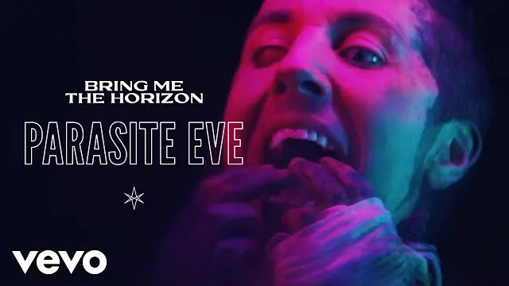
Parasite EveBring Me the Horizon · 2020A nu-metal band from England. Written during COVID.
-
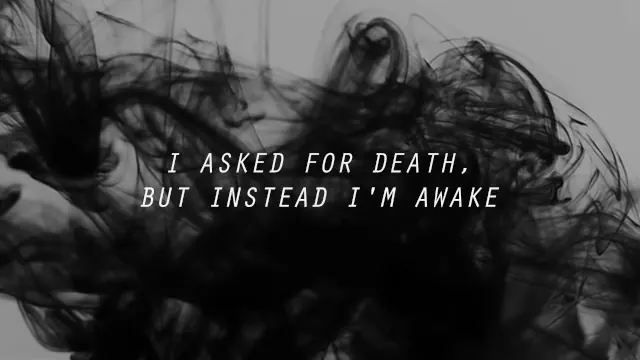
DoomedBring Me the Horizon · 2015 -
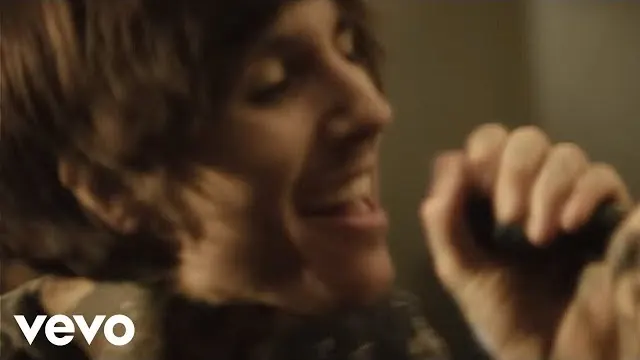
Can You Feel My HeartBring Me the Horizon · 2013 -
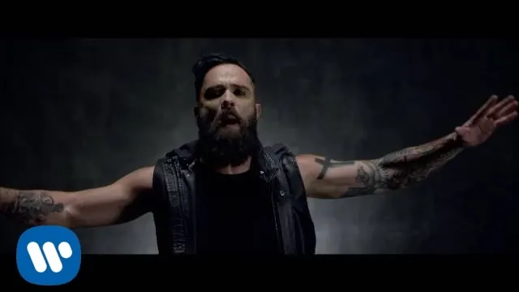
Feel InvincibleSkillet · 2016Female drummer!
-
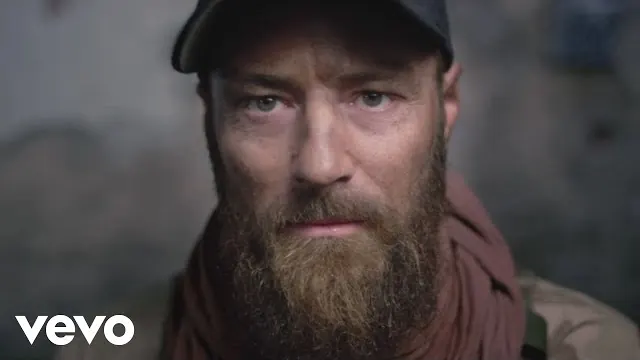
Wrong Side of HeavenFive Finger Death Punch · 2013These guys are ex-military and write songs about mental health.
The deep end
Good luck hearing the lyrics.
-
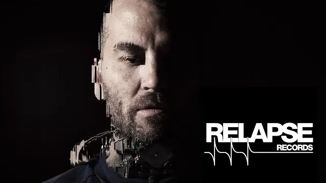
Nihil StrengthAuthor & Punisher · 2018This is literally a one-man industrial doom-metal. He made all the equipment himself. Was a mechanical engineer, decided to go make doom-metal music.
-
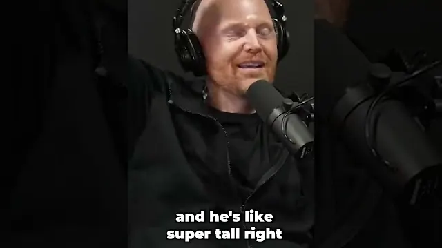
Thirty-second introductionMeshuggahThis is an "experimental metal" band from Sweden. You really need headphones to get the nuance in the 8-string guitars.
-
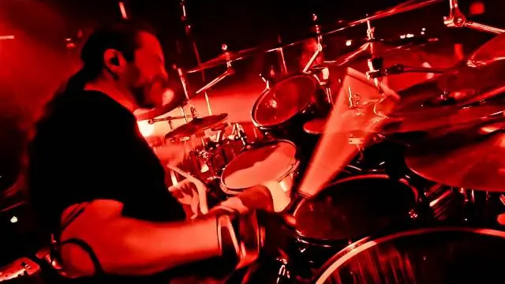
BleedMeshuggah · 2008
Pieces of music, not songs
Progressive and technical metal. These bands write in odd time signatures and build things slowly over eight or nine minutes. Not background music: they want your whole attention, and they're worth it.
On the last three: these guys make more "pieces of music" rather than "songs". If you remember the binocular CD album that I had, where you could see 3D art, this is them. They have so many good songs, here are my favourites.
-
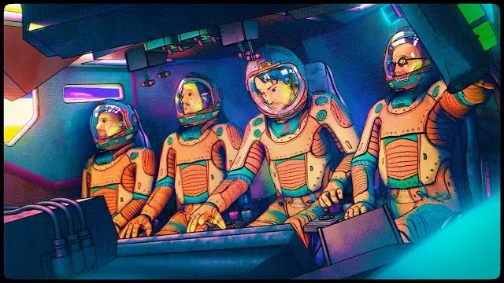
Another WorldGojira · 2021This is actually a French band, despite being called Gojira.
-
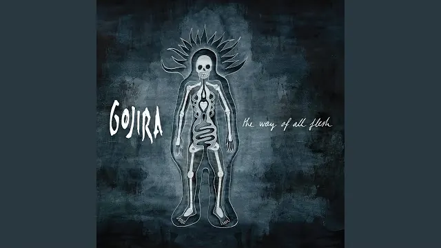
The Art of DyingGojira · 2021You may remember me playing this at one point in the car.
-
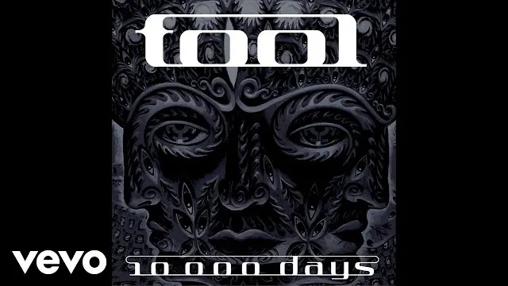
Right in TwoTool · 2006I think you'll appreciate the themes of this and the next one.
-
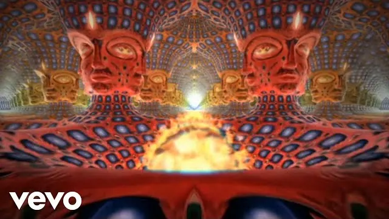
VicariousTool · 2006 -
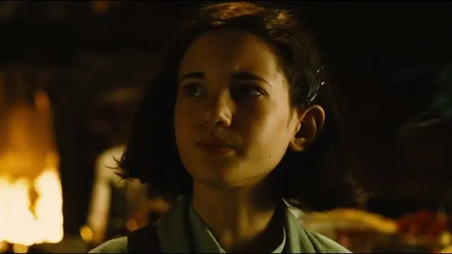
SchismTool · 2001Fun fact: the opening sound is a slow motion recording of the lead singer's cat being squeezed briefly.
The radio years
Softer edges, bigger choruses, written to be sung by a stadium.
-
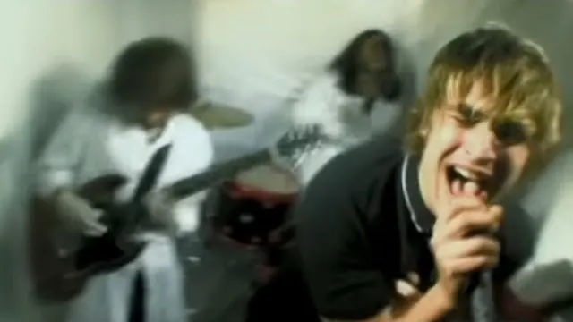
Death CarFightstar · 2009This helped me get through my anger at being broken into.
-
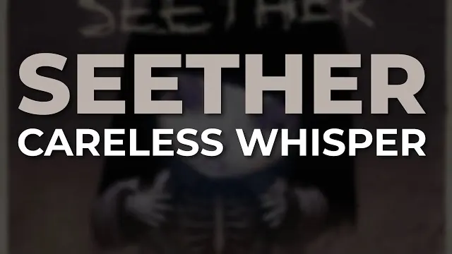
Careless WhisperSeether · 2009A cover of the George Michael song, played completely straight and very heavy.
-
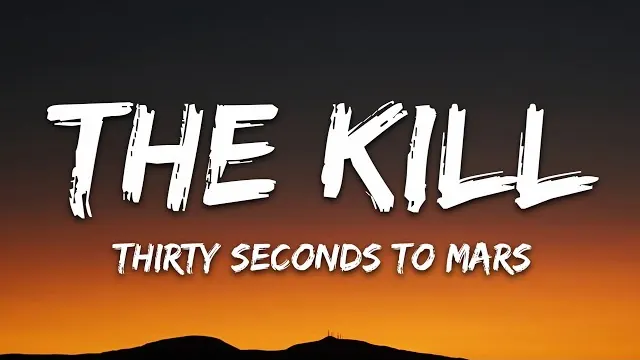
The KillThirty Seconds to Mars · 2005This is Jared Leto's (the Joker) band. Listened to this a lot in early 2025.
-
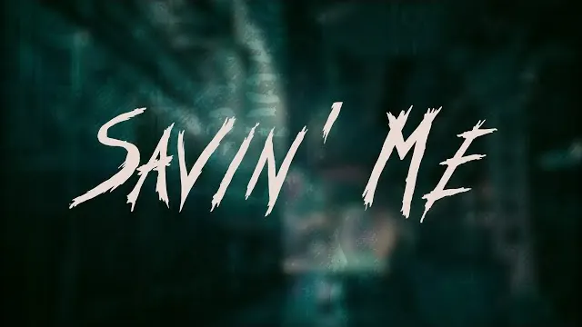
Saving MeNickelback · 2005 -
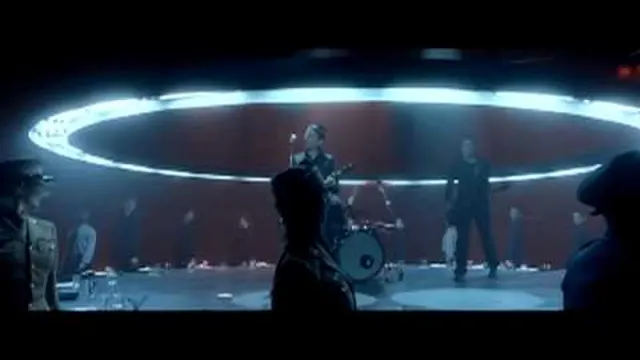
Time Is Running OutMuse · 2003
Big voices
Symphonic and gothic metal: proper singing on top of the heaviness, often by someone with classical training and an orchestra behind them.
-
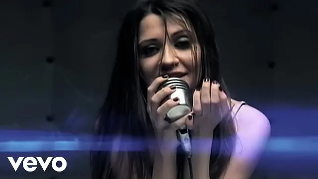
I'm So SickFlyleaf · 2005Female singer.
-
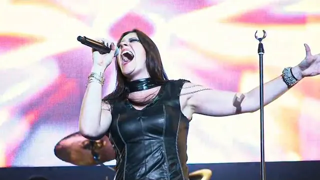
Ghost Love ScoreNightwish · 2004Operatic metal, female singer.
-
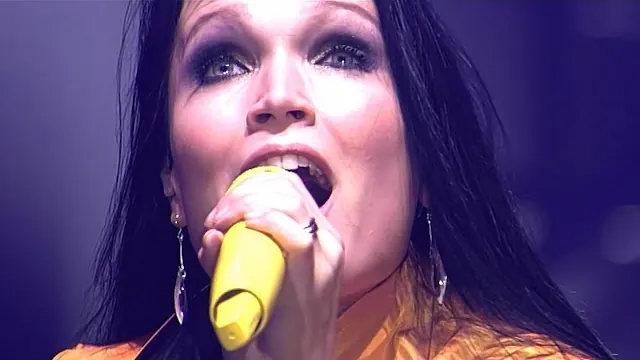
Phantom of the OperaNightwish · 2002 -
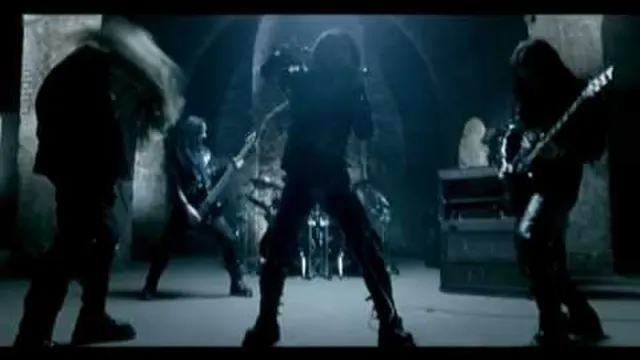
Nymphetamine FixCradle of Filth · 2004Female singer.
-
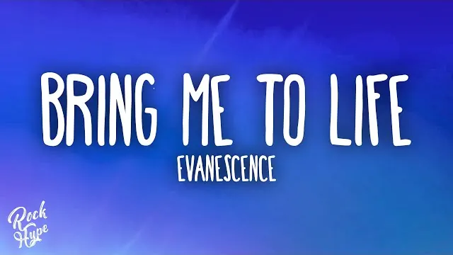
Bring Me to LifeEvanescence · 2003 -
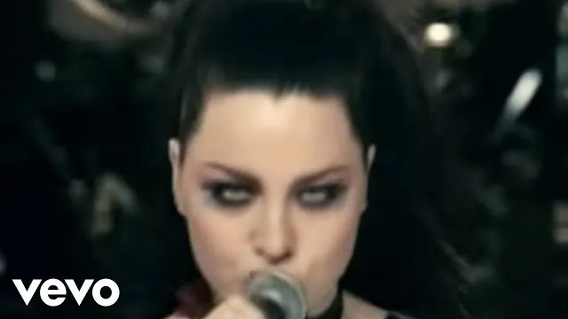
Going UnderEvanescence · 2003Classic 90's female metal vocals.
The period when weirder was better
Nu-metal. Detuned guitars, hip-hop rhythms, and a race between about forty bands to be the strangest one in the room. This was my late teens and twenties, and it hasn't aged evenly.
-
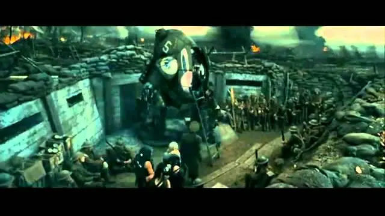
Get Up!Korn & Skrillex · 2011Metal and electronics.
-
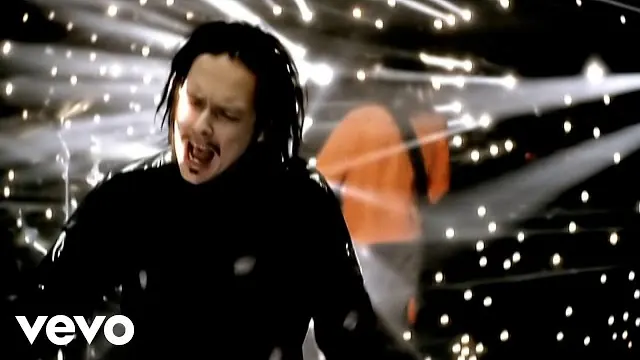
Freak on a LeashKorn · 1998 -
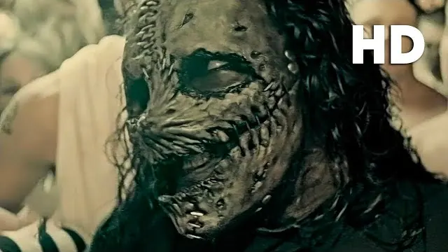
DualitySlipknot · 2004 -
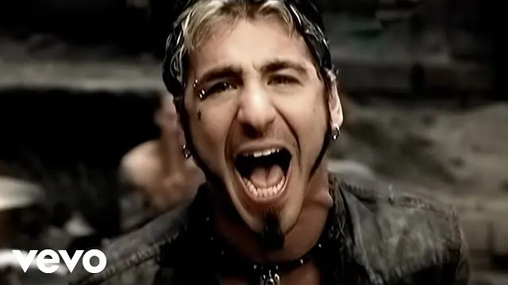
I Stand AloneGodsmack · 2002 -
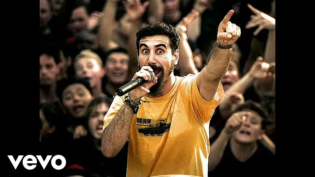
Chop Suey!System of a Down · 2001 -
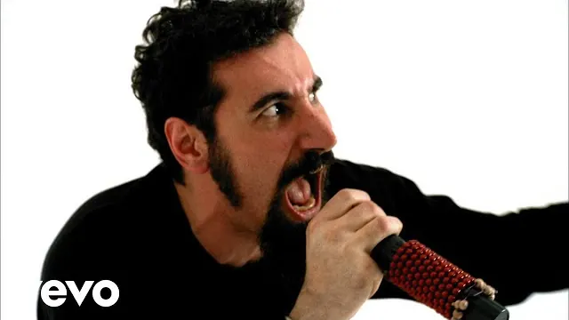
ToxicitySystem of a Down · 2001 -
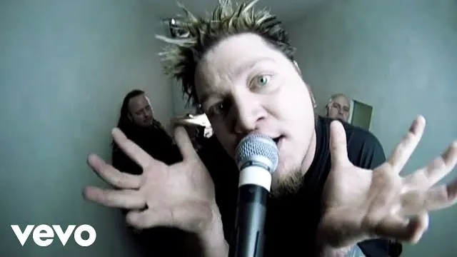
BodiesDrowning Pool · 2001Classic military metal.
-
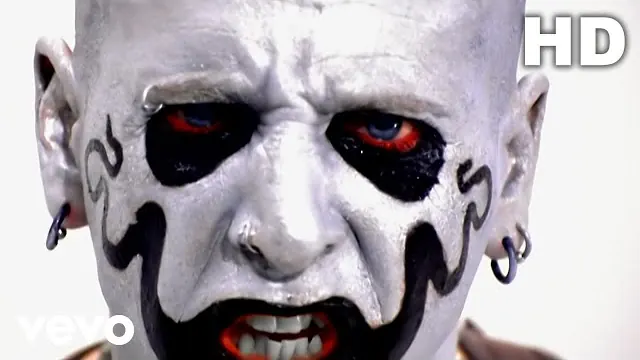
DigMudvayne · 2000 -
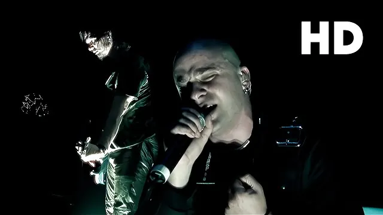
Down with the SicknessDisturbed · 2000Same band as did Sound of Silence.
-
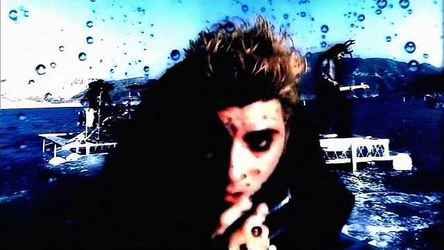
My Own Summer (Shove It)Deftones · 1997
Industrial and shock rock
Machinery noises, theatre, and bands who worked out that being frightening on television was a career. Half of this was designed to upset people's parents, which by now includes me.
-
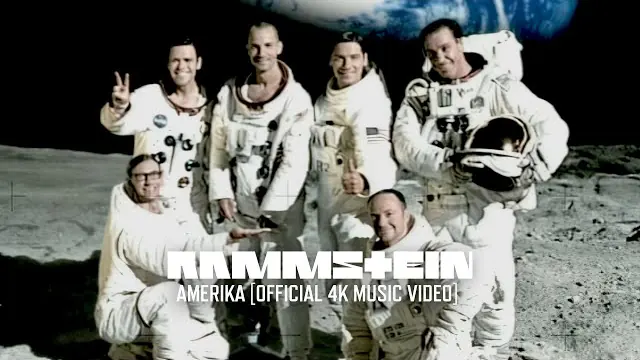
AmerikaRammstein · 2004 -
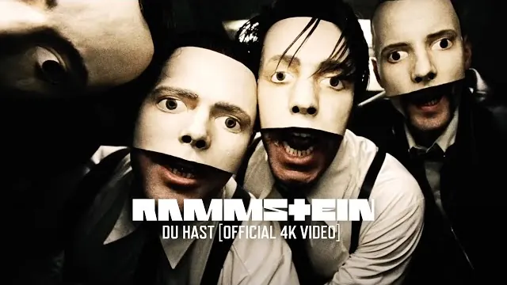
Du HastRammstein · 1997German.
-
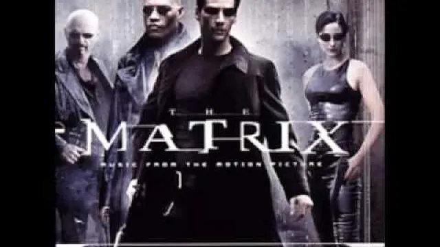
DragulaRob Zombie · 1998This one is from the Matrix soundtrack.
-
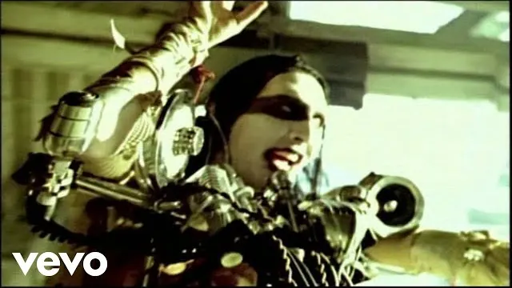
The Beautiful PeopleMarilyn Manson · 1996
Grunge and alternative
What was on the radio when I was at school. Quiet verse, enormous chorus, and a singer who sounds like they mean it.
-
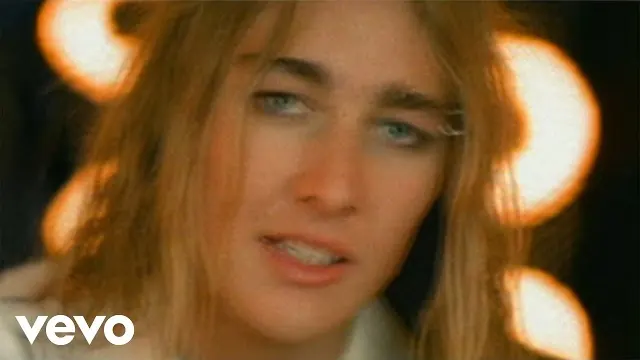
FreakSilverchair · 1997Australian grunge band from Newcastle.
-
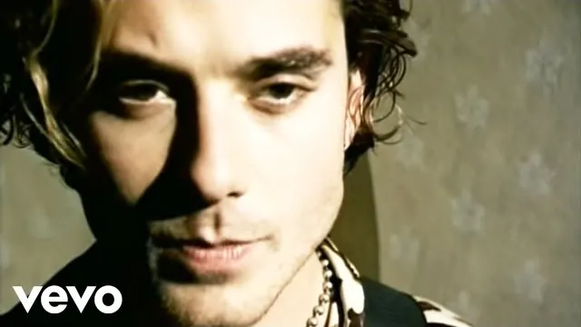
SwallowedBush · 1996 -
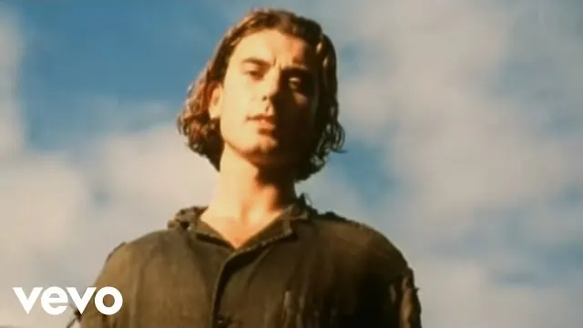
GlycerineBush · 1994 -
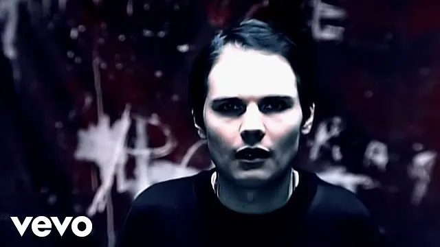
Bullet with Butterfly WingsSmashing Pumpkins · 1995Fun fact: I played drums for this song at a high-school talent performance in grade 12.
-
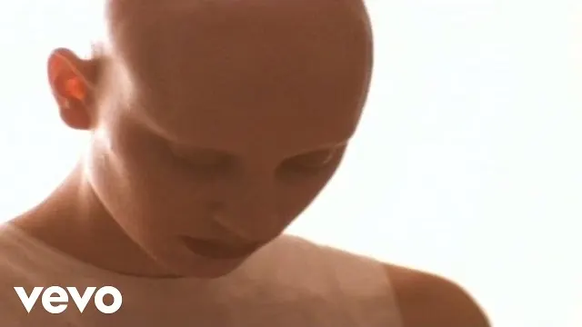
Lightning CrashesLive · 1994 -
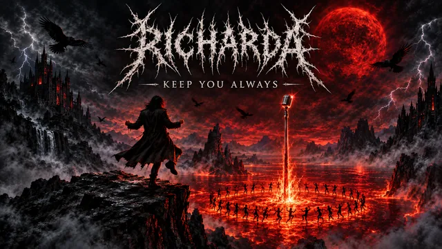
Keep You AlwaysRicharda
Old, still good
-
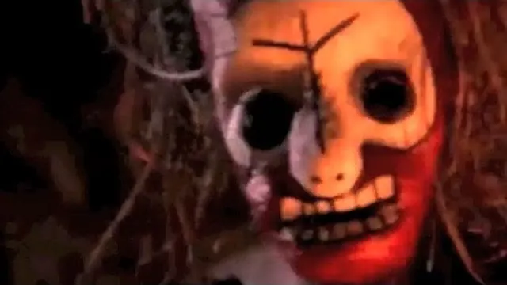
Roots Bloody RootsSepultura · 1996This is a Brazilian band.
-
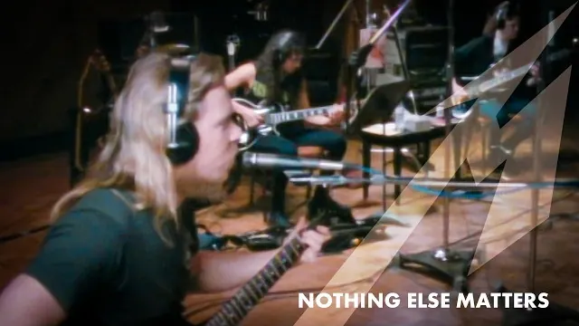
Nothing Else MattersMetallica · 1991 -
For Whom the Bell TollsMetallica · 1984
This was remixed for the movie Spawn and it's my preferred version.
- Cowboys from HellPantera · 1990
Not a band
Written for a video game rather than a record, which turns out not to matter at all.
-
The PartisanMick Gordon · 2020
Mick Gordon is the guy who wrote "The Only Thing They Fear Is You".